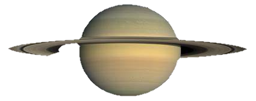

Volver
|  |
DefiniciónSaturno es otro de los planetas más grandes del sistema solar, por lo que al igual que Júpiter, recibe su nombre de uno de los dioses más importantes de la mitología para griegos y romanos, quienes respectivamente se referían a él como Cronos y Saturno, y en sendas mitologías fueron padres de Zeus y Júpiter. Cronos y Saturno eran, de hecho, los dioses del tiempo y la agricultura. Saturno es el planeta que a lo largo del año se puede observar durante más tiempo en el firmamento, por lo que la elección de ambas culturas para nombrar a este gigante gaseoso no es una casualidad. Características principales de SaturnoSaturno es el sexto planeta en distancia al sol del sistema solar. También se trata del segundo planeta más grande del sistema solar (9 planetas Tierra en fila cabrían a lo largo de la línea de su ecuador) y el otro de los gigantes gaseosos de nuestro vecindario cósmico, aunque al igual que sucede con Júpiter, los científicos creen que podría albergar un núcleo sólido en su interior. Sin duda, el elemento más llamativo de Saturno son sus 7 anillos, los cuales se cree que están compuestos por millones de pedazos de hielo y roca procedentes cometas, asteroides o lunas que se desintegraron debido a la poderosa gravedad de Saturno. Este sistema de anillos se extiende hasta una distancia de 282.000 kilómetros del planeta, pudiendo alcanzar un grosor de 10 kilómetros en los más importantes. Una curiosidad sobre estos anillos es que fueron nombrados alfabéticamente en el orden en que fueron descubiertos, y no en el orden en el que se establecen. Así, los anillos principales son A, B y C, y los anillos D, E, F y G son más débiles y se descubrieron más recientemente. En resumen, comenzando en Saturno y desplazándonos hacia el exterior encontraríamos los anillos, D,C, B, A, F, G y E. Al igual que Júpiter, Saturno tiene 53 lunas conocidas y 30 lunas adicionales a la espera de la confirmación de su descubrimiento, es decir, un total de 83 lunas, algunas tan interesantes como Titán o Encélado. Estructura interna, geología y composición de SaturnoSaturno es el sexto planeta del sistema solar y con un radio de 58.232 kilómetros el segundo planeta más grande, solo superado por el colosal Júpiter. Al igual que este se trata de un planeta del tipo gigante gaseoso. Otras de sus similitudes con Júpiter pasan por que, al igual que este, Saturno es una inmensa esfera conformada en su gran mayoría por hidrógeno y helio, es decir, Saturno carece de una superficie sólida. En su interior podría esconderse un núcleo sólido de metales como el hierro y el níquel, el cual estaría rodeado de material rocoso y otros compuestos solidificados por la intensa presión y el calor, aunque por el momento se trata únicamente de una hipótesis. Del mismo modo que el gigante del sistema solar, el núcleo de Saturno estaría rodeado por una capa hidrógeno metálico líquido debido a la gran gravedad del planeta y la presión ejercida por su atmósfera. Saturno también está dotado de una potente magnetosfera que provoca auroras boreales en los polos del planeta, sin embargo, al contrario que sucede en la Tierra, estas auroras no guardarían relación con la actividad solar, si no que estarían causadas por una combinación de partículas expulsadas por las lunas de Saturno y la rápida rotación del campo magnético del planeta; se trata de un fenómeno aún bastante incomprendido por la ciencia. La atmósfera de SaturnoVisto con un telescopio, Saturno presenta un patrón de colores claros divididos en bandas tenues que van del amarillo y el beige, hasta el marrón o el gris, y que representan las nubes, corrientes en chorro y tormentas de las que está recubierto el planeta. Saturno es también un planeta de potentes vientos, los cuales pueden alcanzar velocidades de hasta 500 metros por segundo en su región ecuatorial. Otras de las características más peculiares de la atmósfera del planeta es el gran hexágono que puede observarse en el hemisferio norte de Saturno, el cual muta de color con el paso de las estaciones y gira en sentido antihorario. Este patrón se observó por primera vez en la visita a Saturno de la sonda Cassini. El fenómeno se produce debido a la conjunción de una gran tormenta giratoria en el centro de su polo norte y una corriente en chorro ondulada con vientos que pueden alcanzar los 320 kilómetros por hora: un fenómeno único en todo el sistema solar. La exploración de SaturnoPor su lejanía, a Saturno solo se han acercado 4 misiones espaciales en la historia de la humanidad. La primera de ellas fue la Pioneer 11, en 1979, la cual hizo un sobrevuelo del planeta a unos 20.000 kilómetros de altitud obteniendo las primeras imágenes del planeta. Posteriormente, en los años 1980 y 1981, respectivamente alcanzaban el planeta de los anillos las sondas Voyager I y Voyager II. La primera de ellas envió las primeras imágenes de alta resolución del planeta, los anillos y de Saturno, además de fotografías de la superficie de alguna de sus lunas. De hecho, fue en esta misión que los científicos descubrieron que Titán, una de las lunas más interesante del planeta, poseía atmósfera. Un año más tarde la Voyager 2 complementaría la labor de su predecesora antes de continuar su camino hacia Urano. Pero sin duda, la más importante misión jamás enviada a Saturno fue la nave Cassini, lanzada junto a la sonda sonda Huygens que tendría como destino la luna Titán. Tras un viaje de casi siete años, Cassini llegó a Saturno en el año 2002 y estuvo operativa hasta el año 2017, periodo durante el cual nos ha proporcionado algunas de las imágenes más sorprendentes del planeta, sus anillos y de algunas de sus lunas como Titán o Encélado, sobre las cuales se baraja la posibilidad de que pudieran llegar a ser habitables. Curiosidades sobre el planeta Saturno
|
Fuente: National Geographic
Volver